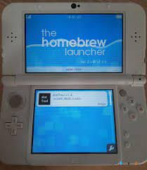
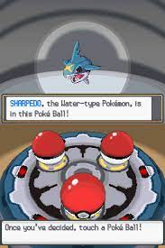
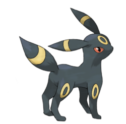

e-Portfolio
Andrea Rottman
Experience
Work with Computers
My experience with computers started with me playing videogames, especially Pokemon. I wanted to create a new experience, so I took steps to hack my 3DS to randomize the game. I really enjoyed the process and it got me into computers. Emulators and randomized games, photoshopping, to using inspect on Google to mess with the HTML, and getting into computer programming in college in my second year, my first programming language being Python.
7



